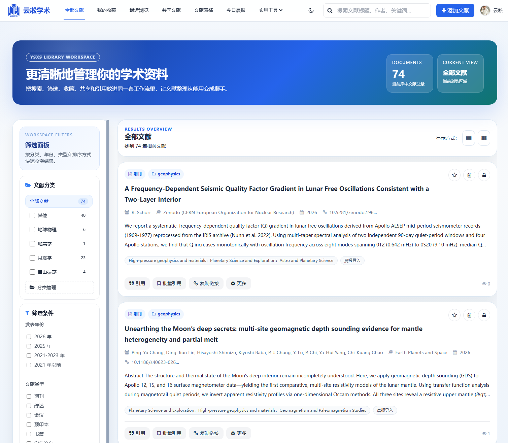
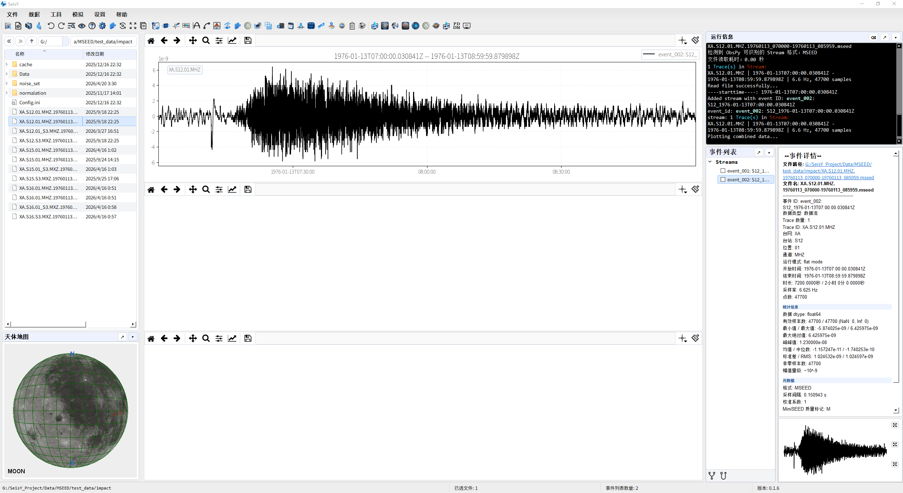
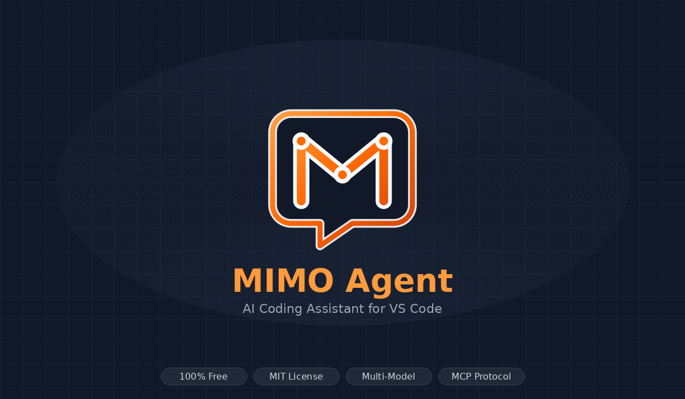
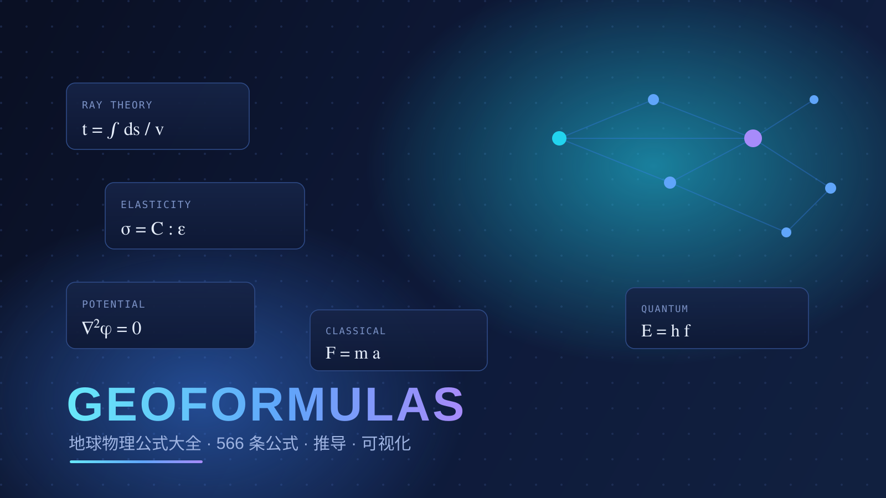
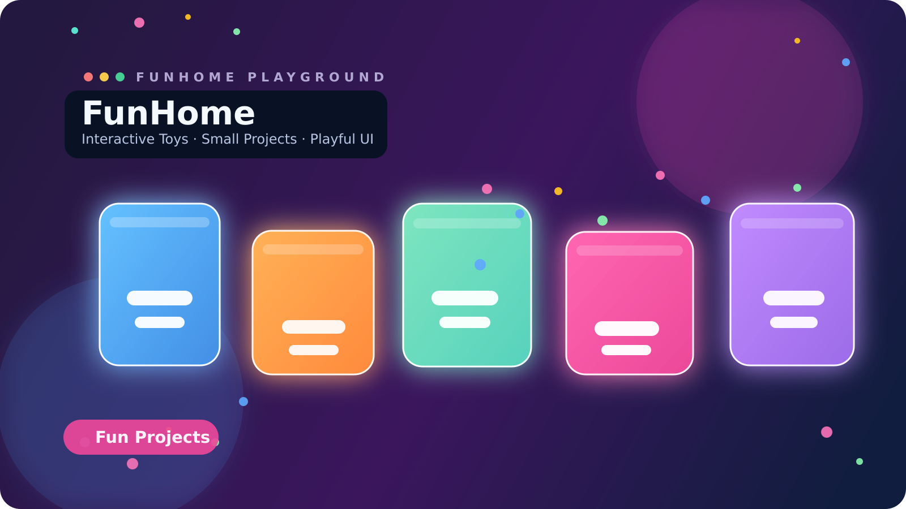
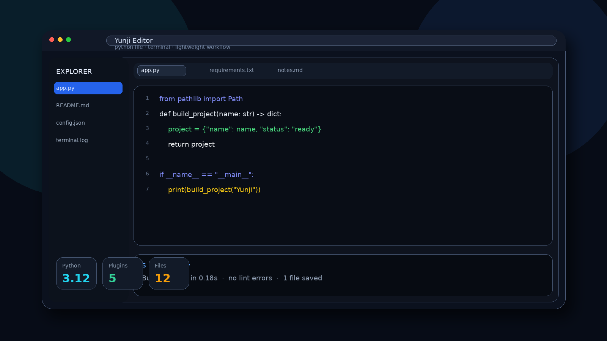
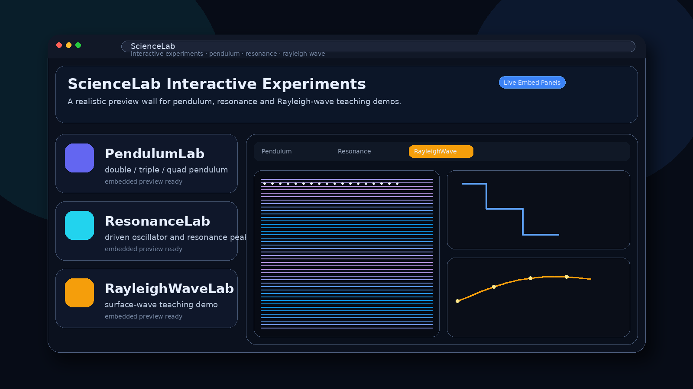
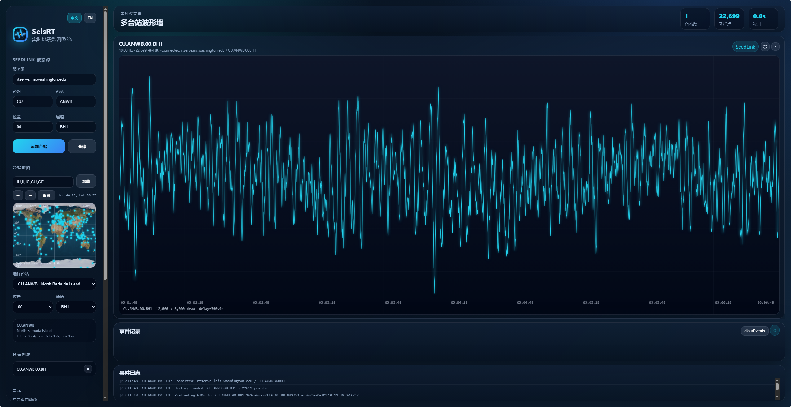

我是云凇，一名地球物理博士研究生，也是独立开发者。这里记录我对月球内部的观测、对自由振荡的聆听，以及把研究变成工具的全部作品。
我是云凇，地球物理专业博士研究生，研究方向为月球内部结构与自由振荡。我尝试用最克制的方法，从阿波罗时代的月震记录里，还原四十多亿年前月球深处的回响。
同时我是一名独立开发者，把科研中反复用到的流程做成趁手的工具：波形处理、实时监测、公式检索、文献管理。研究与开发，在同一张工作台上互相滋养。
地球物理博士研究生
yusp519@qq.com
武汉市洪山区鲁磨路388号
月球内部 · 自由振荡
研究、计算、界面与部署共用同一套工具语言，下面是我日常工作中真正高频使用的部分。
信号处理、频谱分析、正演反演与学术写作的计算底座。
把波形、公式与模型变成可交互、可阅读的图形界面。
服务、数据、版本与实时协议，支撑作品稳定运行。
去噪、反褶积、频谱分析与自由振荡识别。
从算法到桌面应用的完整工程化交付。
让复杂波形与模型成为可交互图形。
前后端、数据库与部署的一人闭环。
点击左侧索引调取档案，每一件都从真实的科研或日常需求中生长出来。







